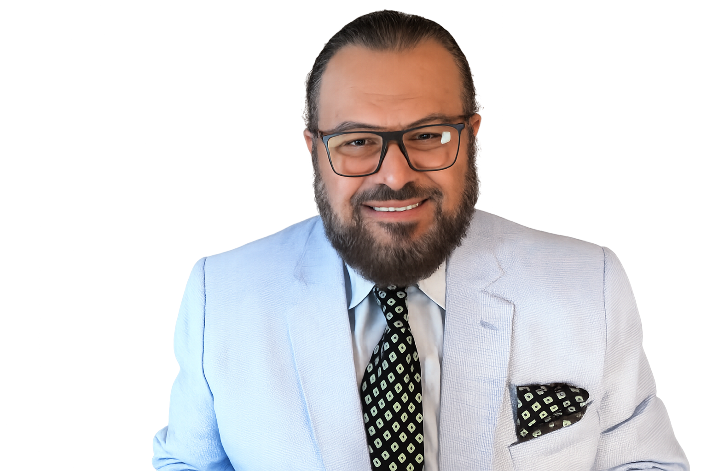

Dr. Ihab Abdelgawad Al-Faidy has served as the Imam of the Islamic Community of Greater Killeen since 2013, guiding our congregation in prayer, learning, and community life.
He is also President of the Aman Institute for Youth Intellectual Security, and previously served as Director of the Islamic Understanding Institute in Panama City, Florida (2011–2012). For nearly two decades — from 1991 to 2010 — he was an instructor at the renowned Al-Azhar Institutes in Cairo, Egypt.
Dr. Al-Faidy is deeply invested in supporting Muslim youth as they navigate life in North America. He works to help young people overcome the challenges they face today — including behavioral struggles and religious misunderstandings that can lead to extremism and violence — by grounding them in authentic knowledge, sound reasoning, and a balanced understanding of their faith.
Dr. Al-Faidy delivers khuṭbahs, classes, and counseling in three languages:
Dr. Al-Faidy's life's work centers on the next generation of Muslims growing up in the West. He believes that with proper guidance, authentic Islamic knowledge, and a community that listens, young Muslims can meet the pressures of modern life — peer influence, identity, extremism, and confusion about faith — with confidence, mercy, and wisdom.
That conviction shapes the khuṭbahs he gives, the classes he teaches, and the counseling he offers families at ICGK.
Join us for Jumu'ah, daily prayers, or one of our programs — and don't hesitate to reach out if you'd like to speak with the Imam directly.